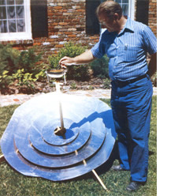

It's that little gem over there on the facing page and-brother!-does it have a lot going for it! It's big enough to cook up a pot of stew, soup, greens, meat, or whatever to feed a whole family ... it's constructed of commonly available materials (Masonite, aluminum foil or aluminized mylar, wood, small strips of iron) . . . it's very easy to put together .. . it's rugged enough to shrug off the bumps that break most of the solar cookers on the market ... it's simple to repair when it is damaged ... its cooking "stem" pops right out when you've finished with it (giving this solar stove near-maximum portability with near-minimum fuss) . . . and you can build the little darlin'--even during this Age of Inflation-for under $10. That's a powerful lot of goodies for one neat package to offer!
The secret of the VITA cooker's ability to deliver so much for so little is the way in which it gathers sunlight and focuses the heat on the bottom and sides of a container of food. Instead of the fragile, heavy, and expensive glass mirrors that so many other sun-powered stoves use for this job . . . the VITA unit collects and condenses solar energy with a tough, relatively lightweight, and inexpensive "Fresnel" reflector. (Which is nothing but several concentric rings of aluminum foil-covered Masonite progressively "dished" so that they all focus on roughly the same spot.) This approach to the problem has yet another advantage: Reflective rings can be added or removed, as desired and with little trouble, to increase or decrease the cooker's "wattage".
"And it works!" says MOTHER researcher Emerson Smyers who, following VITA instructions, has built and tested one of the stoves. "All the VITA dimen. sions are given in metric measurements, however, sounless you want to spend a couple of hours converting centimeters and millimeters to inches-you should buy a metrically scaled tape measure before you start this one: Once you get past that, though, there's nothing to the project. And the finished cooker will bring a pound of stew to a rolling boil in less than 20 minutes!"
Convinced? Then order out your 18page VITA Solar Cooker Construction Manual. It's available for $2.25 plus 35d handling from Volunteers in Technical Assistance, 3706 Rhode Island Ave., Mt. Rainier, Maryland 20822 or from Mother's: Bookshelf, P.O. Box 70, Hendersonville, North Carolina 28739 for $2.25 plus 9540 postage and handling.
|
 |
|
|